Simulation-教程5接触和接头
装配体的配合是不会在仿真里生效的，仿真里的模型默认是相互独立分离的。因此，你需定义【接触条件】或【接头】来描述零部件间的相互作用。
【接触条件】
【接头】
接触条件，在前面零件的分析里已有了解过了，但接头条件则是装配体的一个特色。利用【接头】的数学模型替代建模的真实模型可以有效加快分析进程，减少网格数量加快求解速度。类型包括：
| 接头类型 | 定义 |
|---|---|
| 定义两个截然不同的实体中面之间的刚性链接。 | |
| 定义只抗张力（电缆）、只抗压缩或者同时抗张力和压缩的弹簧。 | |
| 连接两个零部件的圆柱面。 | |
| 在零件或装配体的所选面与地之间定义一个弹性基座。 | |
| 在两个零部件之间或零部件与地之间定义一个螺栓接头。 | |
| 通过一个在两端铰接的刚性杆将模型上的任意两个位置捆扎在一起。 | |
| 估计焊接两个金属零部件所需的适当焊缝大小。 | |
| 不使用任何填充材料而在小块区域（点）上连接两个或更多薄壁重叠钣金件。 | |
| 在杆和外壳零部件之间应用轴承接头。轴承夹具在零部件和地面之间应用轴承支撑。 |
万向节分析
万向节装配体是用来传递扭矩的，即从垂直方向传递到轴的倾斜方向。该装体由支架背面的四个M6ANSIB18.6.7M沉头螺栓连接在底座(baseplate)上，而底座则由两个M8的沉头螺检连接到另一个结构件中。通过对手柄施加2.5N的水平力来产生扭矩。从顶视图看，力的方向季直于手辆臂，如图5-1所示。
轴刚性地连接在万向节头(Yoke_femal)的底面并穿过支架(bracket)的圆孔。
假设由于不正确的加工及轴与支架接触部分的摩擦引起的温升，接触部分会临时性接触，从而导致杆件把有粗矩都传递到支架上。进一步增加的扭矩会使连接部分松脱，从而导致装配体开始旋转。
5.5第一部分:使用草稿品质的粗糙网格讲行分析
新建算例
材料
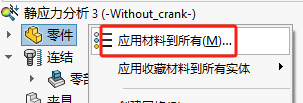 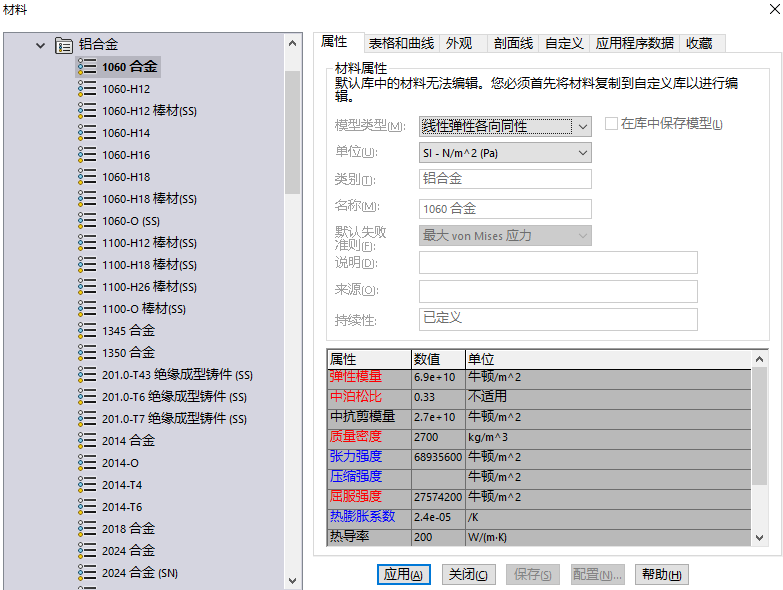连结
螺栓
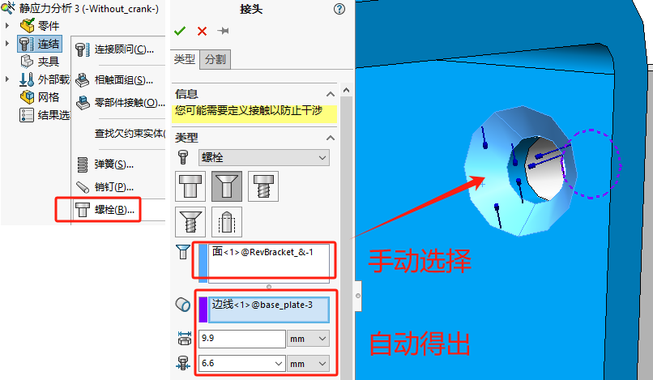【紧密配合】
选项不仅控制螺栓是否直接于孔接触，还控制螺栓孔的壁面是否会发生形变。
- 如果螺栓刚度<<零件刚度，柔软的螺栓不会使孔壁形变，则取消勾选下✖；
- 如果螺栓刚度=>零件刚度，则需要勾选✔；
- 如果螺栓直径<<螺栓孔直径，螺栓碰不到孔壁，则取消勾选✖；
考虑螺栓强度；
考虑螺栓预载；

是，相同异形孔特征里的都会生成螺栓接头。
 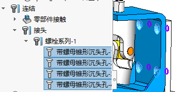
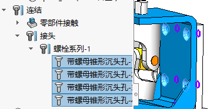
接触直观图解
【接触直观图解】
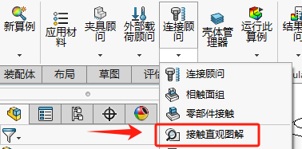 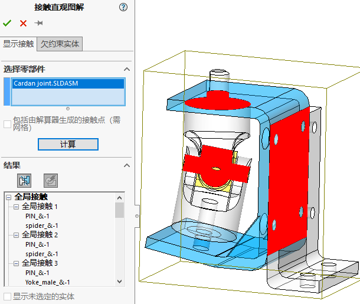由于接触太多会自动生成“接触面组”
为保证没有两个零件是接合的，可以删除全局接触的条件，因为任何错误或忽略定义的接触条件可能导致求解时出现问题或显示错误的位移结果。
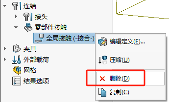 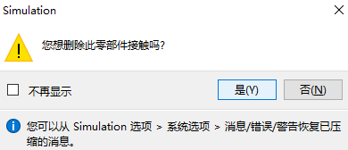局部相触面组
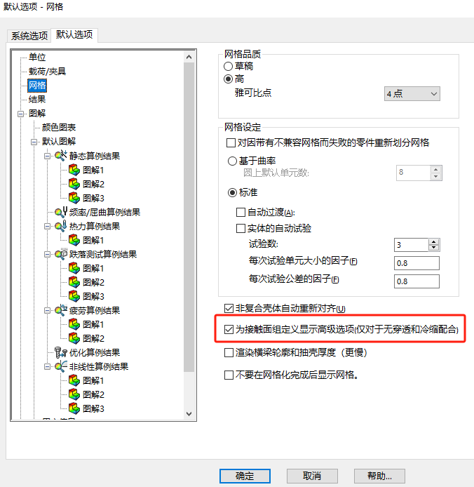 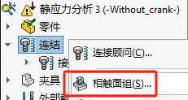 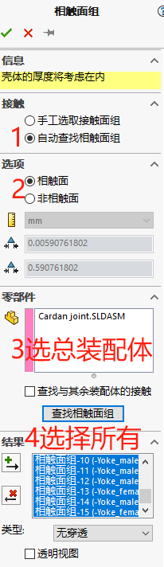 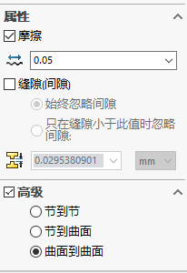【节到节】选项：全局、零部件或局部接触会强制使用兼容网格，而【节到曲面】选项（仅限于局部接触）可能会得到不精确的接触应力。
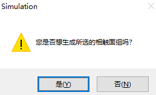 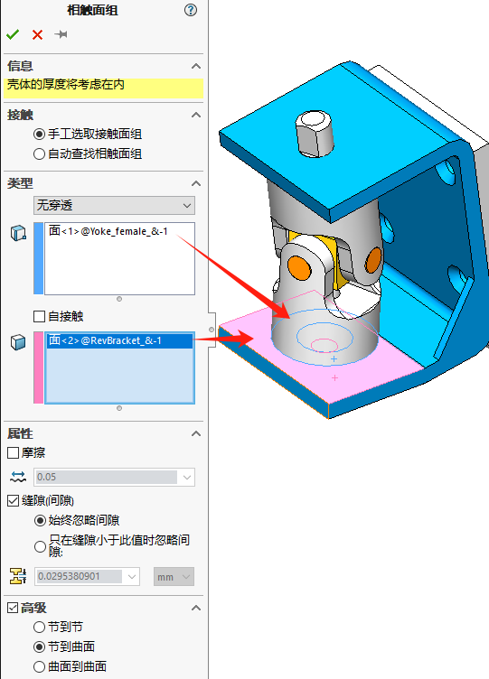销钉
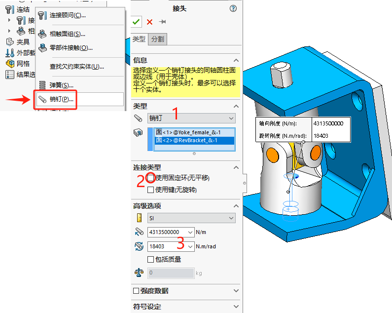3轴向刚度、旋转刚度：计算公式
虚拟壁
虚拟壁有两种可用类型：【刚性】和【柔性】。刚性是假设无穷大，可用于模拟非常坚硬的底座。如果选择柔性则必须定义“轴向”，“切向”的有效基本刚度值，这种方法便于用户模拟复合底座墙壁，并且不需要把它们列入模型中。
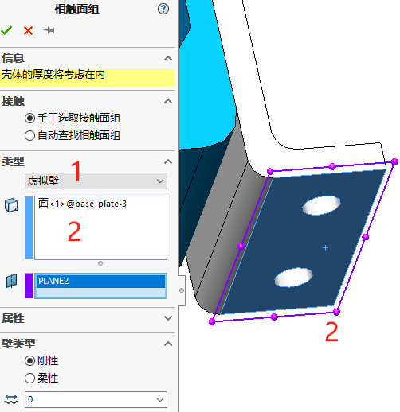夹具
螺栓
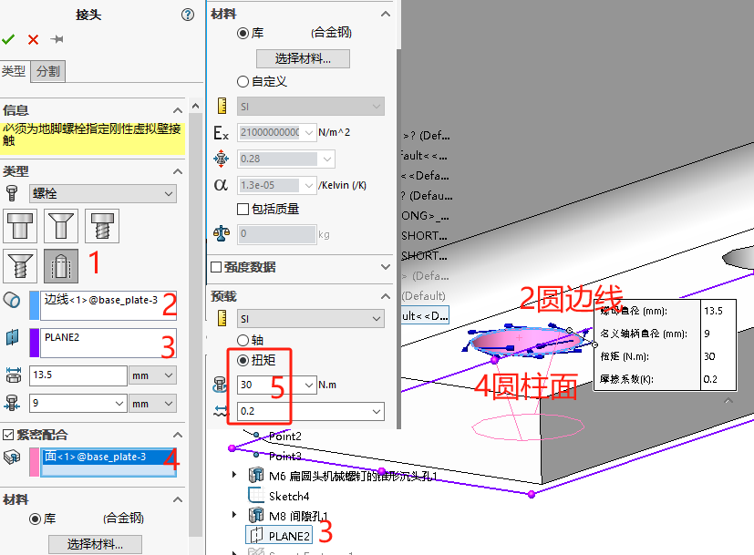 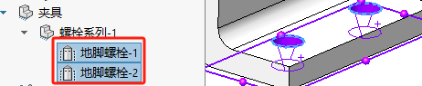外部载荷
远程载荷
因为我们不关注曲柄臂部件的变形情况，因此这里可以使用【远程载荷】来简化替代曲柄臂的受力模型，这样我们就无需对曲柄臂进行网格划分。
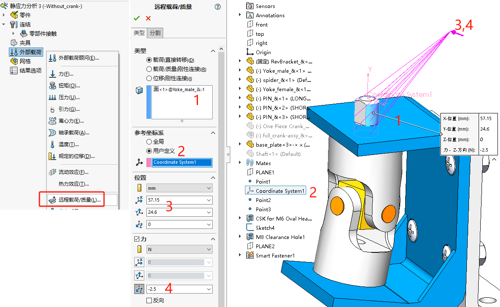 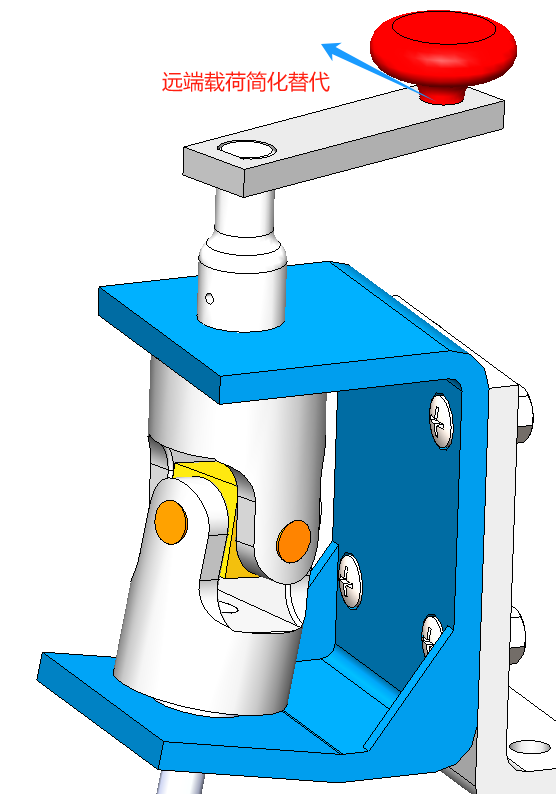网格
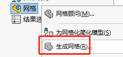 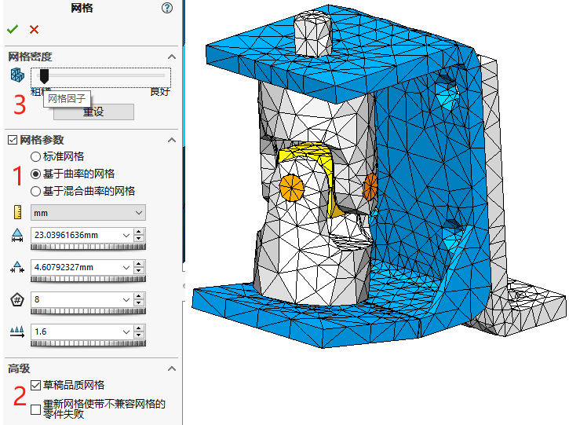运行
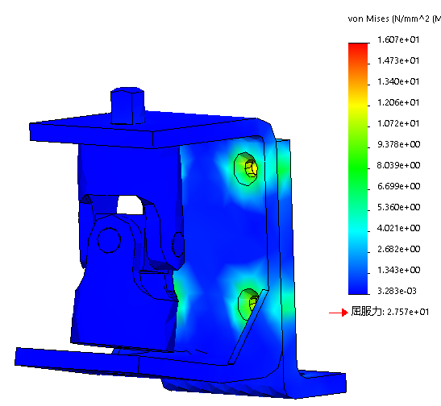仅显示零件结果
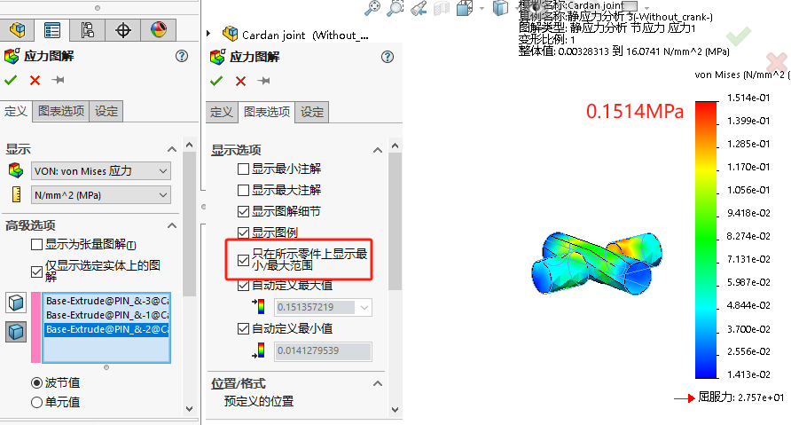列举螺栓力
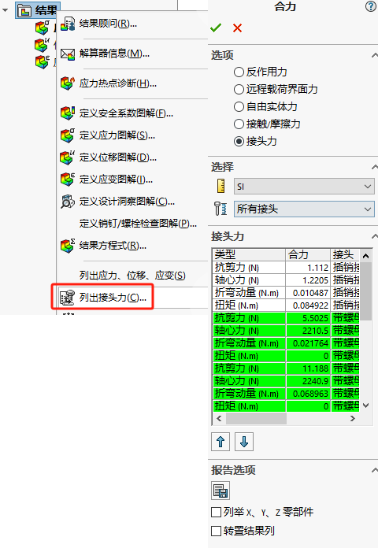自动转换Toolbox紧固件到接头螺栓。自动转换支持类型：
螺栓的紧密配合
使用高品质网格分析
细化网格验证仿真结果
网格细节
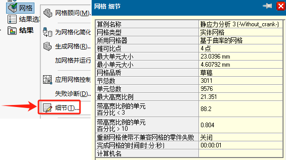一般来说，如果关注在严重弯曲或高曲率几何体当中的应力或应变结果，在厚度方向至少需要4个【草稿】(或2到3个【高】)品质的单元。在外支架和底座上使用相对粗的网格并没有多大关系而在厚度方向也至少需要1个高品质或2个草稿品质单元。除非接触应力非常重要，接触面没有必要进一步细化，尤其是在使用【高】品质网格时。
5.6.1在薄壁特征上需要的实体单元数量
高宽比例
高宽比例图解
在应力重要的区域，高宽比应当低于50。一般区域低于1000.
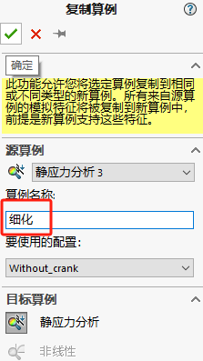雅可比
上文已经讨论了网格品质评估标准长宽比例。并在步骤29中给出了长宽比例的图解。
另一个网格品质评估标准为可用于判断高曲率和扭曲单元的雅可比。SOLIDWORKS Simulation 在网格划分阶段会自动检查单元的雅可比值，并不需要人工干预。然而，雅可比越接近1越好。其值同样不能接近于0或为负值，否则将导致严重的局部网格划分失败问题。雅可比检查只能用于高品质单元。
运行
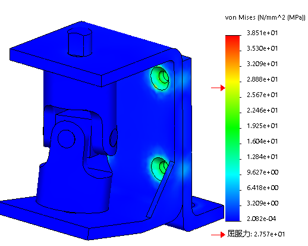5.7 总结
本意分析了一个含有多个接触条件及接头的实体网格装配体，学习了创建局部相触面组的方法。
指定旋转刚度的销钉接头用来模拟真实的杆件。使用远程载荷特征远距离加载载荷，而无需对连
接件进行建模。
参考模型的特征尺寸，分析了有限元网格的质量并讨论了单元的优化尺寸。
最后介绍了一个新的后处理特征–安全系数图解。本章使用该特征显示了安全系数的分布，并讨论了该图解类型中提供的各种选项。可以看到Yoke和spider 零件都是安全的，不会失效，然而托架显示有安全系数低于3.5的地方。在下结论之前，应该对托架划分更精细的网格，研究应力结果是否集中。之后便可以做出判断，是否需要更改材料或设计来满足3.5的安全系数
练习
练习5-1 链扣(第一部分)
练习5-2链扣(第二部分)
练习5-3 升降架装配体
练习5-4 带有基座的分析(选做)点焊-实体网格练习
5-5练习
5-6 螺栓接头